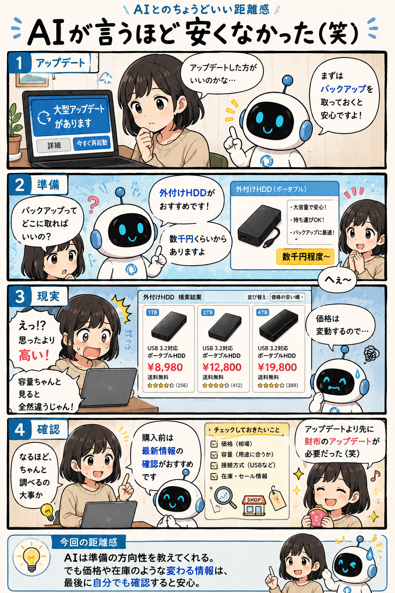

#042
AIが言うほど安くなかった（笑）
バックアップの準備、思ったより本気だった。

メモ
AIは「何をすべきか」を考えるのは得意ですが、「今いくらなのか」のような変化する情報はズレることがあります。
今回もバックアップを勧める判断自体は正しかったものの、実際に必要な容量や製品を調べると想像より費用がかかることがありました。
AIの提案を入口にしつつ、購入前には最新価格や仕様を確認すると安心です。
今回の距離感
AIは準備の方向性を教えてくれる。でも価格や在庫のような変わる情報は、最後に自分でも確認すると安心。